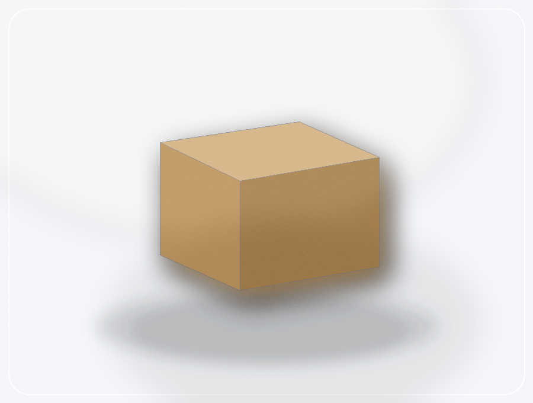
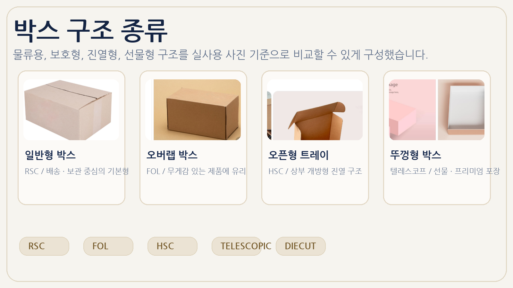
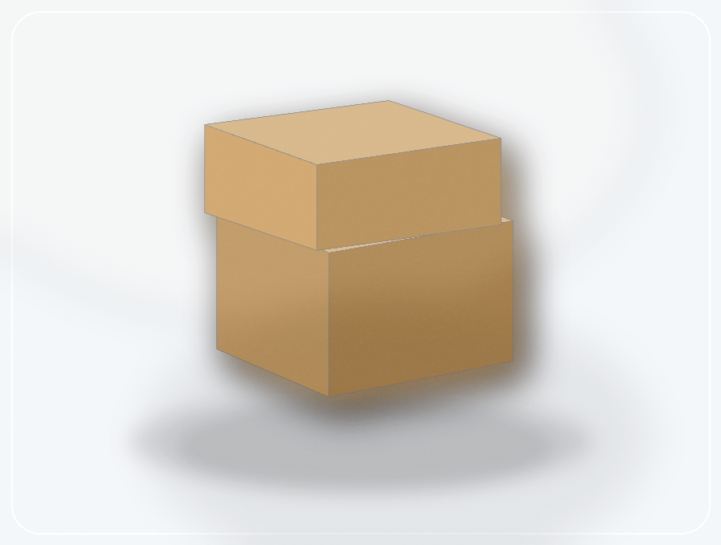
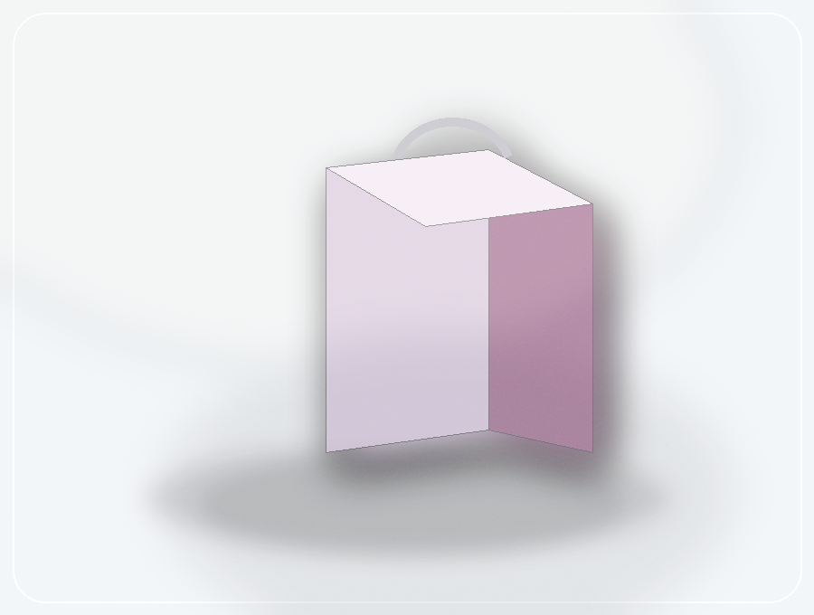
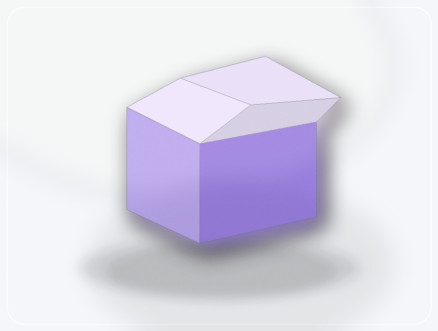

A형 박스
가장 기본적인 상자 형태로 출고, 보관, 온라인 배송까지 폭넓게 대응합니다. 상단 날개가 안정적으로 덮이기 때문에 실무에서 가장 자주 선택됩니다.
처음 주문하시는 분도 쉽게 이해할 수 있도록 구조, 재질, 제작 흐름을 정리했습니다. 실무에서 자주 묻는 포인트를 중심으로 다시 설명해두었습니다.

박스군을 먼저 구분하고, 제품에 맞는 형태를 빠르게 찾을 수 있도록 정리했습니다.

재질과 인쇄 결과의 차이를 실무 관점에서 이해하기 쉽게 풀었습니다.

작업 순서와 납기 흐름을 한 번에 확인할 수 있게 구성했습니다.

가장 기본적인 상자 형태로 출고, 보관, 온라인 배송까지 폭넓게 대응합니다. 상단 날개가 안정적으로 덮이기 때문에 실무에서 가장 자주 선택됩니다.

뚜껑 결합이 보강된 느낌의 형태로, 내부 제품을 비교적 안정감 있게 감싸는 형태입니다. 샘플 키트나 세트 포장에도 잘 맞습니다.

상단이 깔끔하게 닫히는 타입으로 진열과 보관을 동시에 고려할 때 잘 맞습니다. 브랜드 박스 느낌을 내기 좋습니다.

낮고 넓은 구조를 활용해 소품 세트나 프로모션 구성품을 담기 좋습니다. 내부 고정재와 함께 쓰기 편합니다.

정면과 측면이 단정하게 떨어지는 형태로 일반 단상자부터 선물형 패키지까지 폭넓게 연결됩니다.

조립 편의성과 구조 안정성을 함께 본 타입입니다. 여러 구성품이 들어가는 세트형에 잘 맞습니다.
바닥 구조가 빠르게 잡히는 편이라 작업 효율이 중요할 때 유리합니다. 실무 납품 일정이 빠듯할 때 자주 선택됩니다.

속상자와 겉슬리브가 분리되는 형태로, 제품 공개 경험을 단계적으로 보여주기 좋습니다.
칼라박스는 보통 50개부터, 골판지박스는 250개부터, 싸바리박스는 500개부터 검토하는 경우가 많습니다.
AI, PDF, EPS 같은 벡터 기반 파일을 가장 선호합니다. JPG/PNG도 참고 자료로 함께 받을 수 있습니다.
무지 샘플과 인쇄 샘플은 제품 성격과 일정에 따라 상담 후 진행할 수 있습니다.
칼라박스는 약 7~10일, 골판지는 10~15일, 싸바리박스는 15~20일 정도를 기본 참고 기준으로 봅니다.